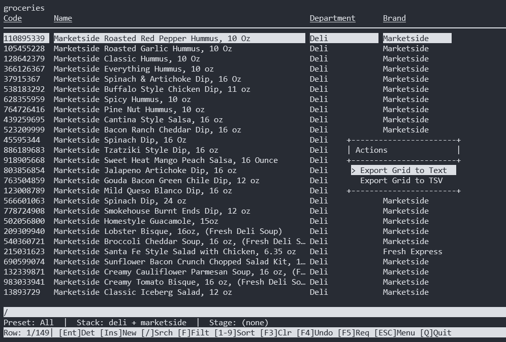
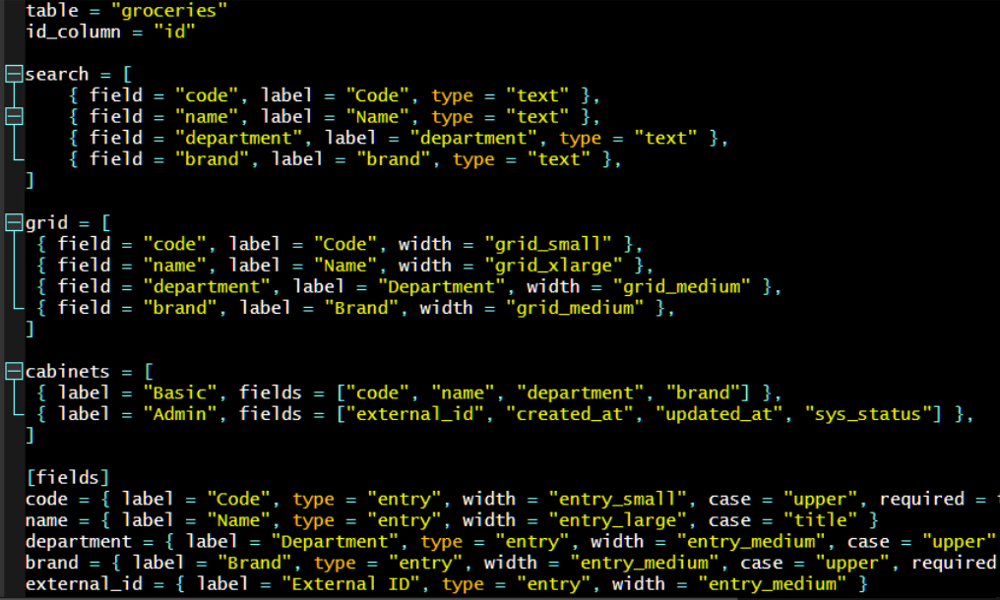

Enterprise Applications. Built for the Terminal.
When people hear "terminal app," they think of a 1970s command line. But I built a full application framework.
This isn't a script. It's a complete MVC architecture that runs in a terminal window. It renders interactive data grids, handles complex relational lookups, and manages hundreds of data entry fields on a single 13-inch screen.
This is the engine that powers the Cardex (CRM), the Toolcrib (Inventory), Tuidex (personal knowledgement manager), and the Social Media Publisher.
The "Cabinet" UI
Modern web apps force you to scroll endlessly. When you have 150+ data entry fields on a 13-inch screen, scrolling kills productivity. So I built the "Cabinet" UI.
Fields are grouped into cabinets. You hit C to open a list, or <- and -> to slide between them. You hit Tab to jump between fields. No mouse. Just muscle memory.
In-Memory Joins
The TUI engine doesn't hit the database for every keystroke.
It caches lookup tables in memory. It maps foreign keys to human-readable strings instantly, so you can sort, filter, and edit 75,000 rows without a single loading spinner.
The "No-Code" Engine (For Data Apps)
Most of my data management apps—like the CRMs, inventory trackers, and compliance logs—don't require any Python coding to build or modify.
Because the engine is entirely TOML-driven, the Python code is just a rendering layer. You can define a new table, a new menu, and a new data-entry layout just by writing a TOML file. You can even write those TOML files inside the TUI itself. It is the same concept as using C to compile another C program. The tool builds the tool.
Here is the actual interface rendered by the engine for a simple grocery inventory, followed by the TOML configuration that generated it.


Why the Terminal?
Because GUI frameworks choke on data.
I built a Tkinter GUI version of this engine. It has nice buttons and a familiar desktop feel. But a Tkinter Treeview (which isn't even a real data grid) will freeze at 5,000 rows. A simple calendar widget can take 5 seconds to render because it's busy calculating pixels.
My Curses TUI handles 5,000 rows instantly because it doesn't care about pixels. It paints characters to a buffer. You don't need a 5-second calendar popup; you just type 2024-05-12.
If your team is doing high-volume data entry, the mouse is the enemy. The terminal is the cure.
Why only the standard library?
There are plenty of third-party TUI frameworks out there. urwid, textual, prompt_toolkit. But I don't use them.
-
prompt_toolkitwants to hijack the terminal input loop, making multi-pane applications a nightmare. -
textualis essentially CSS + a DOM renderer. It's a web browser disguised as a terminal app. If you want a button to move, you write a CSS rule.
I use curses. It ships with Python. It hasn't changed since the 90s. It is the most stable UI framework in existence. It doesn't try to be a web browser. It just paints characters to a screen.
The Micro-Kernel Architecture
I built a Micro-Kernel. The core engine (src/) handles SQLite CRUD, Curses rendering, and the grid state.
The applications (Cardex, Toolcrib, Social Media) live in isolated directories. They inherit from the core engine, but they can override anything. If an app needs a custom renderer or a specific business rule, it just drops a Python file into its own folder. The engine detects it, uses it for that app, and leaves the rest of the system untouched.
I built this entire ecosystem in 4 days. Not by "vibe coding," but by using AI as a junior programmer. I provided the architecture and the 30 years of business logic. It wrote the boilerplate. I did the testing, the Q&A, and the rewrites.